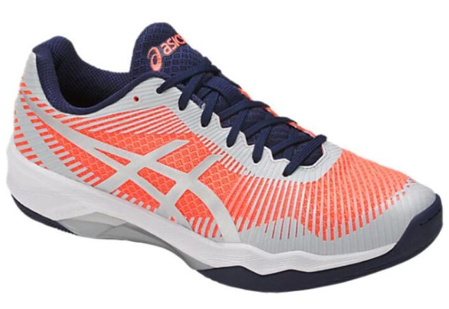
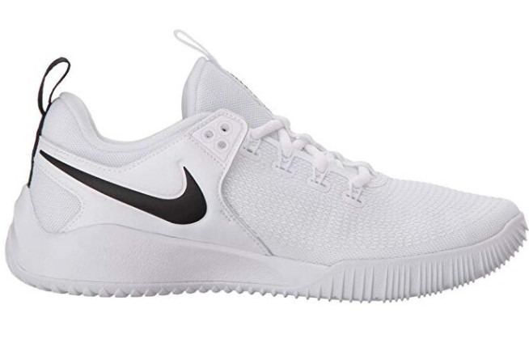

A GREAT VOLLEYBALL SHOES
Best Volleyball Shoes For Setters
The setters in a volleyball game are considered the leads of the team. They decide who gets the ball, at what time, and they are responsible to position the player so that the passing of the ball is successful and that no one causes any fowls, especially the player who is positioned to receive the ball. Commonly the setter communicates with their team players through eye coordination or verbal call out. Setters are mainly positioned in one place most of the time, however, they are not limited to such. In fact, they play both front row and back row, therefore the setter needs to be able to block, serve and play defense. Setter shoes are commonly designed and developed to serve an all-rounder. They have to play defense, they must block and still be able to pass and serve the ball to those team members who provide an opportunity to score a point.
Best Volleyball Shoes For Hitters
When shopping for volleyball hitters shoes, there are a few things that you should be looking for. The first thing is that volleyball players or hitters specifically should consider the weight of the shoe. If the shoe is too heavy in construction, or if the player happens to feel an overweight on the foot, such shoe can cause balance issues for the volleyball player, which will ultimately affect the performance of the player’s agility speed. Hitters especially, commonly play a few different roles during the gameplay. They commonly carry pass, attack, block, serve and play defensive mode for their team members. Hitters are also known as spikers. A Spike action is an action in which the athlete diverts the ball’s direction in the opposite direction from where it came from. The quick movement and a steep jump allow the hitter to make a clean counter-hit back to the other side, making it very difficult for the defense line of the opposite team to counter back.
Categories
Recent posts